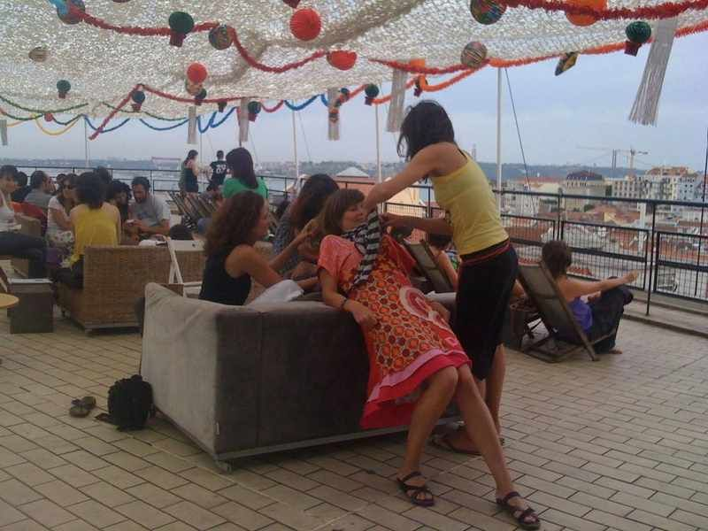
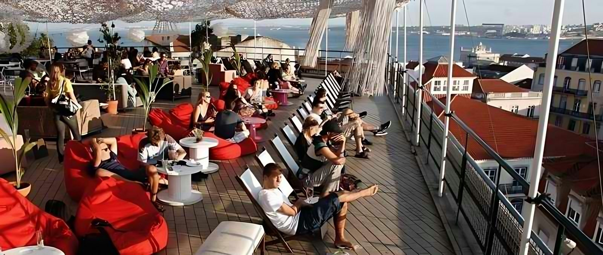
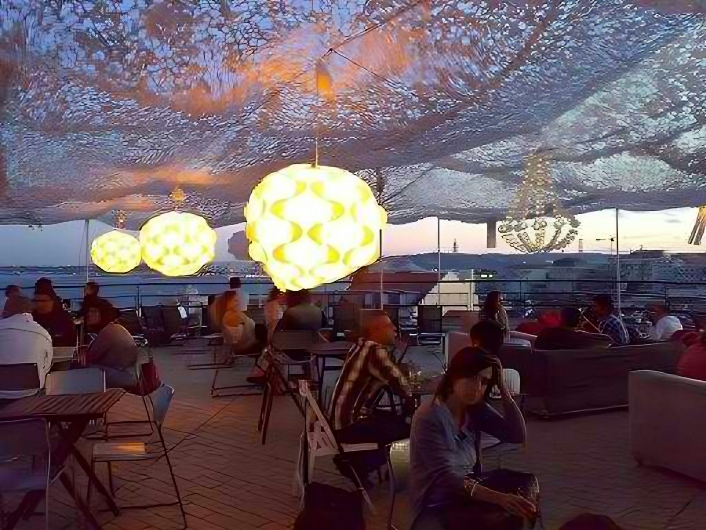
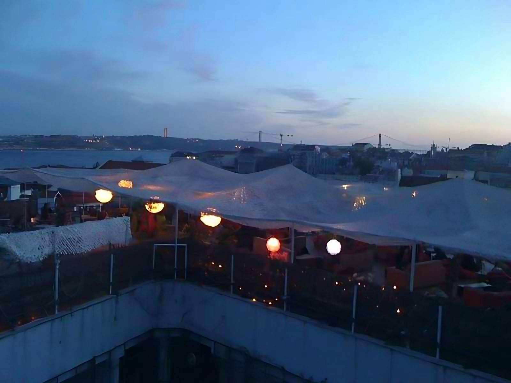
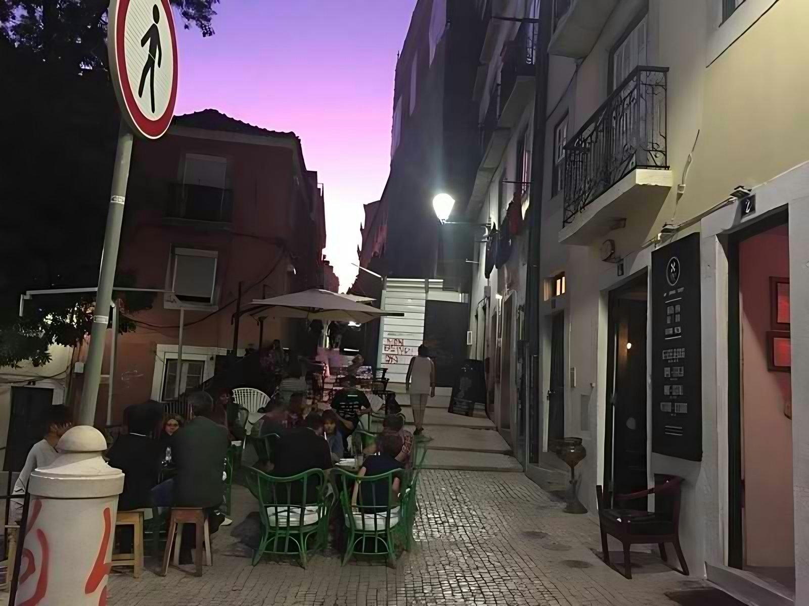

A pergunta
Como fazer as pessoas ficarem do pôr do sol até à noite? Sofás em vez de cadeiras, lanternas que se acendem devagar, música ao vivo quando o céu escurece.
O que desenhei: Direção de conceito e design de atmosfera.
Um telhado no centro histórico, uma rede de sombra e Lisboa inteira a mudar de cor.
Como fazer as pessoas ficarem do pôr do sol até à noite? Sofás em vez de cadeiras, lanternas que se acendem devagar, música ao vivo quando o céu escurece.
O que desenhei: Direção de conceito e design de atmosfera.







Três perguntas, e o resto conversamos à mesa.